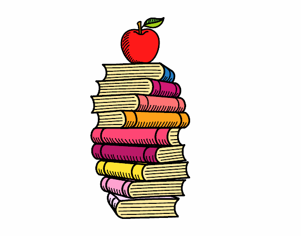
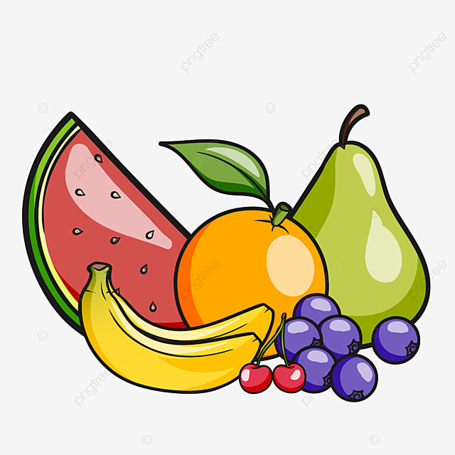

Sugerencias para planificar tu alimentación

Listado y menú semanal
Arma un menú semanal; luego hace un listado de los alimentos necesarios para cada una de esas preparaciones. Chequea lo que ya tenes en casa de esa lista, y entonces compra solo lo que falta.

Comida para llevar
¿Desayunas en el trabajo, facultad o colegio y terminas comiendo galletitas? Hay muchas opciones saludables para llevarte: frutas, frutos secos, muffins o budines del recetario.. solo es cuestión de dejarte el tupper listo la noche anterior..

Consumo de frutas
Frutas: si las compras pero te cuesta incorporarlas dejalas a la vista; tenerlas en una fuente en la mesa favorece su consumo.